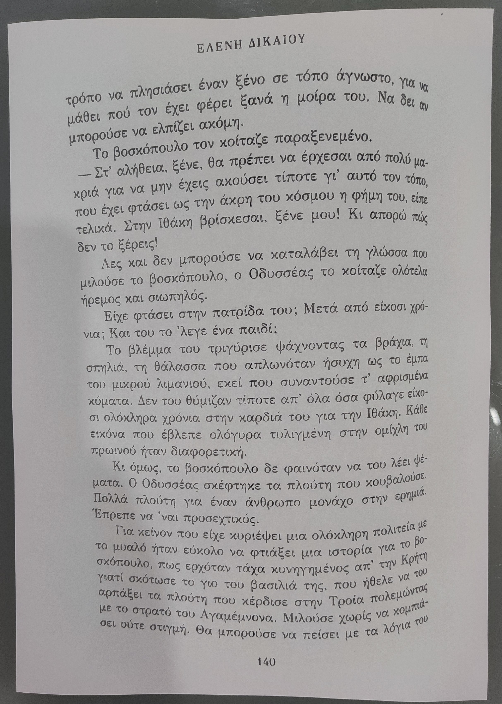
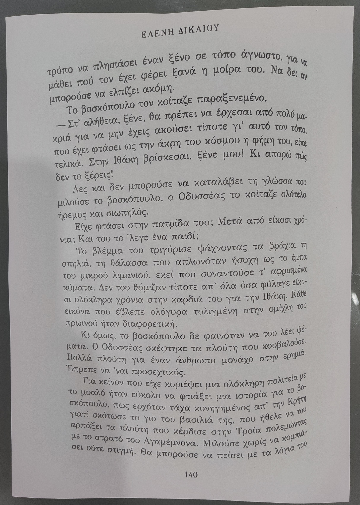

Image binarization
Hello! I made this app to convert images into black and white levels, if you're curious about why and what uses this image processing method has, well I will try my best to explain these points:
- What is image binarization?
- Why did I make this app? (It's applications)
- How to use it and possible questions
What is image binarization?
Image binarization is an image processing method in which a color or grayscale image is taken and is converted into an image containing only 2 colors: black and white
How does it work?
Digital images are composed of pixels, which are tiny squares on the screen, each one consisting of three color components: red, green, blue (RGB). By combining these 3 color channels, a multitude of different colors can be represented, you can play with the input bellow to see some examples:
Also you can use the syringe to see the pixels and the color they display on the screen, you can also use it on the binarized image for comparison!
How to obtain a binary image from a color?
The first step would be to obtain a grayscale image from the original color one.
To achieve this, all the pixels from the image must be extracted and obtain their RGB value. Having the values for a pixel, one conversion method would be to take the average of the 3 color channels:
E.g: A shade of blue given by: RGB(23, 63, 222) becomes (R+G+B)/3 = (23 + 63 + 222)/3 ==> RGB(102, 102, 102), the gray equivalent
By passing through each pixel you can convert an entire color image into a gray one.
Having obtained a grayscale image, a threshold value is set between 0 (BLACK) and 255 (WHTIE) and each gray pixel's value is checked against this threshold.
- If that value is bigger than the threshold --> make it 255
- If that value is less than the threshold --> make it 0
Why did I make this app and some possible applications
The main reason I made this app was because of my printer. To better understand the problem I was facing, here are some images:
The left image is a photo I took of a book page with my phone, and the second image is the printed result. My printer prints only gray images, so it will see the background from the page and try to print that with some shade of gray, wasting ink and making the result unreadable.
Now I knew about this image processing method and how to extract all the pixels's RGB values from and image, so obtaining a binary image shouldn't be that difficult, and so I made this app and here is a result:
.png) 

The left image is the binary representation of the book page and the right one is the printed result, which I say looks alot better than the first one.
This image processing method is really usefull in these cases, where you need to print a photo of a document, page or some text with a non-white background.